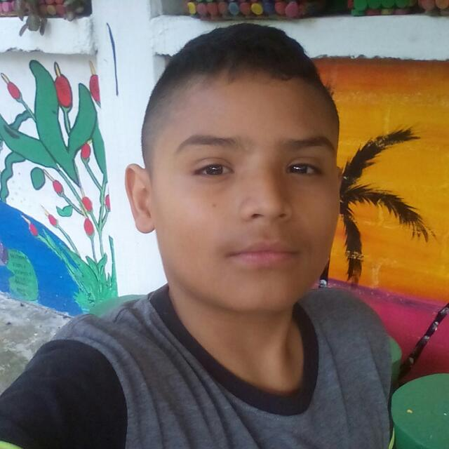

Proyecto de HENRY JUNIOR
Henry junior saavedra mora (nacido en Bogotá el 25 de noviembre del 2007) mas preferible como solo Junior, es un chico normal de secundaria que le gustan bastantes los videojuegos y piensa ser un ingeniero de sistemas cuando entre a la universidad. Él actualmente vive en Rioblanco-Tolima pero durante sus primeros 10 años de vida vivió en Mosquera-Cundinamarca, de igual manera ha estudiado en 4 colegios diferentes, 3 en Mosquera y el último y actuál en Rioblanco.

Información Personal
Nombre de Nacimiento:
Henry Junior Saavedra Mora
Nacimiento:
25 de Noviembre del 2007 (13 años) Colombia, Bogotá-Cundinamarca
Nacionalidad:
Colombiana
Lugar donde vive:
Rioblanco-Tolima
Correo Electronico Personal:
henryjuniorsaavedramora@gmail.com
Familia
Cónyuge:
Nadie 😢
Madre:
Rosa Yanet Mora Vega (45 años)
Padre:
Henry Saavedra Tarapues (50 años)
Herman@s:
1 (Jazmin Saavedra Mora, 20 años)
Información Profesional o Escolar
Grado:
Octavo
Certificados:
Certificado de Prescolar y Certificado de Basica Primaria.
Escuela donde actualmente estudia:
Institución Educativa Tecnica Francisco Julián Olaya